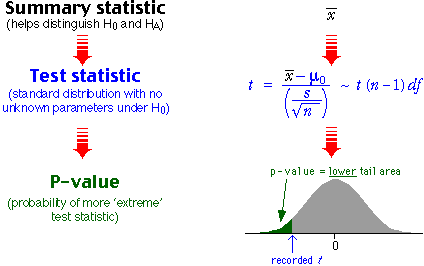
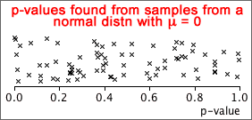
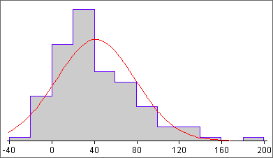

If you don't want to print now,
Inference
Statistical inference refers to statistical techniques for obtaining information about a population parameter (or parameters) from a random sample. There are two branches of inference:
Estimation
Point estimates and confidence intervals give answers to questions of the form:
What parameter values would be consistent with the sample data?
Hypothesis tests
This chapter deals with a related type of question:
Are the sample data consistent with some statement about the parameters?
Errors and strength of evidence
A single random sample can rarely provide enough information about a population parameter to allow us to be sure whether or not any statement (hypothesis) about that parameter will be true. The best we can hope for is an indication of the strength of the evidence against it.
Randomness in sports results
Although we like to think that the 'best' team wins in sports competitions, there is actually considerable variability in the results that can only be explained through randomness. For example when two teams play a series of matches, the same team rarely wins all matches.
English Premier Soccer League, 2008/09
In the English Premier Soccer league, each team plays every other team twice (home and away) during the season. Three points are awarded for a win and one point for a draw. The table below shows the wins, draws, losses and total points for all teams at the end of the 2008/09 season.
Team |
Wins | Draws | Losses | Points | |
|---|---|---|---|---|---|
| 1. 2. 3. 4. 5. 6. 7. 8. 9. 10. 11. 12. 13. 14. 15. 16. 17. 18. 19. 20. |
Manchester_U Liverpool Chelsea Arsenal Everton Aston_Villa Fulham Tottenham West_Ham Manchester_C Wigan Stoke_City Bolton Portsmouth Blackburn Sunderland Hull_City Newcastle Middlesbrough West_Brom_Albion |
28 25 25 20 17 17 14 14 14 15 12 12 11 10 10 9 8 7 7 8 |
6 11 8 12 12 11 11 9 9 5 9 9 8 11 11 9 11 13 11 8 |
4 2 5 6 9 10 13 15 15 18 17 17 19 17 17 20 19 18 20 22 |
90 86 83 72 63 62 53 51 51 50 45 45 41 41 41 36 35 34 32 32 |
Were all teams evenly matched?
A simulation can help us to investigate this question. We could be used to generate results from all 380 matches in the season for evenly matched teams, each result having probabilities 0.372, 0.372 and 0.255 of being a win, loss or draw for the home team. (A proportion 0.255 of games in the actual league resulted in draws.)
If there are differences between teams, we would expect the worst teams to have very few points at the end of the season and the best to have many. On the other hand, for evenly matched teams, we would expect all 20 finals points to be similar. The spread of final points in the league table should tell us something about whether the teams are evenly matched.
In the actual league table, the standard deviation of the final points for the 20 teams was 18.236. The diagram below shows the standard deviations in 200 simulated league tables with evenly matched teams.
Since the probabilities in one tail of the distribution are added, this is called a one-tailed test.
P-value for a two-tailed test
If the alternative hypothesis allows either high or low values of x, the test is called a two-tailed test,
H0 : π = π0
HA : π ≠ π0
The p-value is then double the smaller tail probability since values of x in both tails of the binomial distribution would provide evidence for HA.
Example
In a population of people, a proportion 0.574 have blood group O. In a sub-group of this population, a sample of 54 individuals were tested and 26 of these had blood group O. Is there any evidence that they differ from the main population?
This question can be expressed with the hypotheses
H0 : π = 0.574
HA : π ≠ 0.574
If the sub-group had the same proportion with blood group O as the main population, the number out of 54 with this blood group would have the binomial distribution below.

Approximate p-value
We again test the hypotheses
H0 : π = π0
HA : π < π0
If n is large, the approximate normal distribution for x can be used to obtain the p-value for the test.

Home-based businesses owned by women
A study found that 369 out of 899 sampled home-based businesses were owned by women. Are they less likely to be owned by females than by males? The hypotheses are...
H0 : π = 0.5
HA : π < 0.5
where π = P(owned by female).

with a standard normal distribution. Since x is discrete,
P(X ≤ 369) = P(X ≤ 369.5) = P(X ≤ 369.9) = ...
To find this tail probability, any value of x between 369 and 370 might have been used when evaluating the z-score. The p-value can be more accurately estimate by using 369.5. This is called a continuity correction.
The continuity correction involves either adding or subtracting 0.5 from the observed count, x, before finding the z-score.
Difference between parameter and estimate
If the value of a parameter specified by the null hypothesis (e.g. a population proportion, π0) is close to the corresponding sample statistic (e.g. the sample proportion, p) then there is no reason to doubt the null hypothesis. However if they are far apart, the data are not consistent with the null hypothesis and we should conclude that the alternative hypothesis holds.
A large distance between the estimate and hypothesized value gives evidence against the null hypothesis.
Statistical distance
To help assess this difference, we express it as a number of standard errors since we know from the 70-95-100 rule of thumb that that 2 (standard errors) is a large distance, 3 is a very large distance, and 1 is not much.
For a proportion, the number of standard errors is

In general, the statistical distance of an estimate to a hypothesised value of the underlying parameter is

Values more than 2, or less than -2, suggests that the hypothesized value is wrong. However if z is close to zero, p is reasonably close to π0 and we should not doubt the null hypothesis.
Test statistic and p-value
The statistical distance of an estimate to a hypothesised value of the underlying parameter is

If the null hypothesis holds, z has approximately a standard normal distribution and it can be used as a test statistic for tests about the parameter. The p-value can be determined from the tail areas of this standard normal distribution.

For a two-tailed test, the p-value is the red tail area and can be looked up using either normal tables or in Excel.
Example
We again examine a data set in which 369 out of 899 home-based businesses were owned by women. Are less than 50% of such businesses owned by women?
H0 : π = 0.5
HA : π < 0.5
The diagram below shows how the 'statistical distance' of the sample proportion from 0.5 is calculated.


Statistical distance and p-value
If σ is a known value, the calculation to find the p-value for testing the mean can be expressed in terms of the general formula for the statistical distance between a parameter and its estimate,

In the context of a test about means,

Since z has a standard normal(0, 1) distribution when the null hypothesis holds, it can be used as a test statistic and the p-value for the test can be determined from its tail areas.
For a two-tailed test, the p-value is the red tail area.
Example
The mean of a sample of n = 30 values is 16.8. Does the population have mean µ = 18.3 and standard deviation σ = 7.1, or is the mean now lower than 18.3?
H0 : µ = 18.3
HA : µ < 18.3
The p-value for the test is shown below:

as a test statistic — it cannot be evaluated even when H0 is true. Instead, we must use a closely related type of 'statistical distance' between the sample mean and µ0,

where s is the sample standard deviation. This test statistic no longer has a normal distribution — it has greater spread due to the extra variability that results from estimating s, and has a standard distribution called a t distribution with (n - 1) degrees of freedom.

This has a t distribution (with n − 1 degrees of freedom) when H0 is true, so the p-value is found from a tail area of this distribution.
One-tailed test
H0 : μ = μ0
HA : μ < μ0
The steps for testing these hypotheses are shown in the diagram below.

Example
Consider a sample of n = 13 values with mean  = 16.14
and standard deviation s = 2.15. A test for whether the population mean
is more than 15.0 uses the hypotheses:
= 16.14
and standard deviation s = 2.15. A test for whether the population mean
is more than 15.0 uses the hypotheses:
H0 : µ = 15
HA : µ > 15
Since the population standard deviation, σ, is unknown, the test must be based on a t statistic.

Decisions from tests
Many hypothesis tests are followed by some action that depends on whether we conclude that H0 or HA is true. This decision depends on the data.
| Decision | Action |
|---|---|
| accept H0 | some action (often the status quo) |
| reject H0 | a different action (often a change to a process) |
There are two ways in which an error might be made — wrongly rejecting H0 when it is true (called a Type I error), and wrongly accepting H0 when it is false (called a Type II error).
| Decision | |||
|---|---|---|---|
| accept H0 | reject H0 | ||
| True state of nature | H0 is true | correct | Type I error |
| HA (H0 is false) | Type II error | correct | |
A good decision rule about whether to accept or reject H0 (and perform the corresponding action) should ideally have small probabilities for both kinds of error.
Using a sample mean to make decisions
We assume initially that a population is normally distributed with known standard deviation, σ, and that we want a test for the hypotheses:
H0 : μ = μ0
HA : μ > μ0
Large values of  throw
doubt on H0, so our decision should be of the form:
throw
doubt on H0, so our decision should be of the form:
| Data | Decision |
|---|---|
| accept H0 | |
| reject H0 |
The probabilities of Type I and Type II errors are shown in the red cells of the table below:
| Decision | |||
|---|---|---|---|
| accept H0 | reject H0 | ||
| Truth | H0 is true | ||
| HA (H0 is false) | |||
Example: Test for the hypotheses:
H0 : μ = 10
HA : μ > 10
If it is known that σ = 4, then the mean of a random sample of n = 16 values is approximately normal with mean µ and standard deviation 1. If the decision rule rejects H0 when the sample mean is less than k, the diagram below illustrates the probabilities of Type I and Type II errors.

Simulation
Consider a test for whether a population mean is zero:
H0 : µ = 0.0
HA : µ ≠ 0.0
The diagram below shows the p-values from a t-test for these hypotheses, based on several random samples from a normal distribution for which H0 is true. Note that the p-value is equally likely to be anywhere between 0 and 1.

On the other hand, when HA holds, p-values are more likely to be near zero and
Examples
Of course, we may be wrong. A p-value of 0.0023 could arise when either H0 or HA holds but it is more likely under HA. And a p-value of 0.4 could also arise when either hypothesis is true.
Interpretation of p-values for all tests
| p-value | Interpretation |
|---|---|
| over 0.1 | no evidence that H0 does not hold |
| 0.05 to 0.1 | very weak evidence that H0 does not hold |
| 0.01 to 0.05 | moderately strong evidence that H0 does not hold |
| under 0.01 | strong evidence that H0 does not hold |
Applying the general properties of p-values to different tests
P-values for all hypothesis tests have the properties that were described earlier in this section. You should now be able to interpret any p-value if you know the null and alternative hypotheses that it tests. (A statistical computer program is generally used to perform hypothesis tests, so knowing the details of how the p-value is obtained is of little importance.)
Example
The following data have been collected. Are they sampled from a normally distributed population?
| 41.9 90.6 29.9 10.2 33.7 26.9 88.5 6.5 16.6 19.2 12.6 32.0 3.6 8.1 |
68.1 57.9 -3.0 42.2 14.5 25.7 28.1 78.4 126.2 42.0 66.6 20.6 54.6 31.7 |
2.3 45.5 55.5 37.2 51.6 97.1 80.3 41.1 7.3 31.0 30.2 1.7 27.0 38.0 |
144.9 27.8 121.9 26.0 -11.5 15.5 16.9 27.3 23.9 61.1 68.2 10.0 37.8 77.1 |
24.3 63.2 -0.6 1.0 12.1 134.5 53.8 60.4 9.0 -6.4 31.0 -2.8 114.6 19.8 |
11.5 39.6 59.0 20.7 37.3 23.1 32.7 13.0 70.6 87.3 -3.2 -20.8 119.1 -0.1 |
104.4 -4.6 72.5 7.7 31.4 36.9 47.2 74.7 29.1 70.5 77.7 81.0 191.8 1.6 |
-0.8 59.4 -2.2 -12.5 81.6 44.0 63.6 114.3 33.6 83.0 70.8 50.1 55.8 28.3 |
-7.9 51.3 37.7 48.3 88.9 59.4 126.9 35.0 51.0 91.1 -2.7 79.2 0.1 12.9 |
16.2 23.0 22.4 64.4 10.2 7.6 27.7 8.0 23.5 25.3 22.5 |
The diagram below shows a histogram of the data and the best-fitting normal distribution. Could the skewness in the data have occurred by chance from a normal population?

The Shapiro-Wilkes W test can be used to test whether data come from a normal distribution:
H0 : population distribution is normal
HA : population distribution is not normal
Computer software reports the p-value for this test as "under 0.01". We conclude that the probability of obtaining such a non-normal looking sample from a normal distribution is less than 0.01, so there is strong evidence that the data do not come from a normal population.